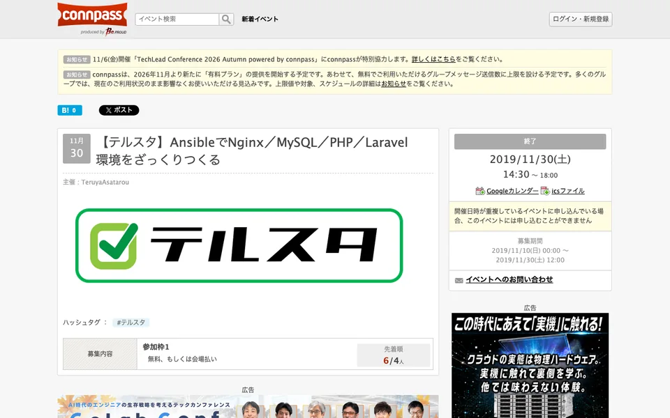
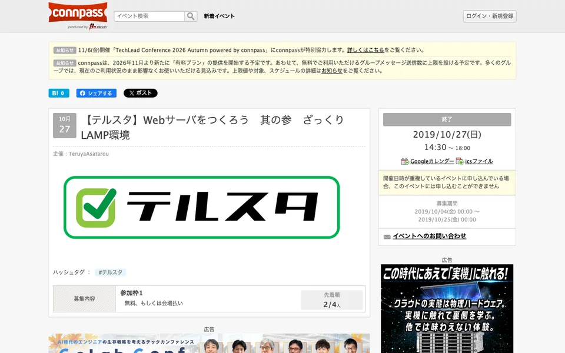
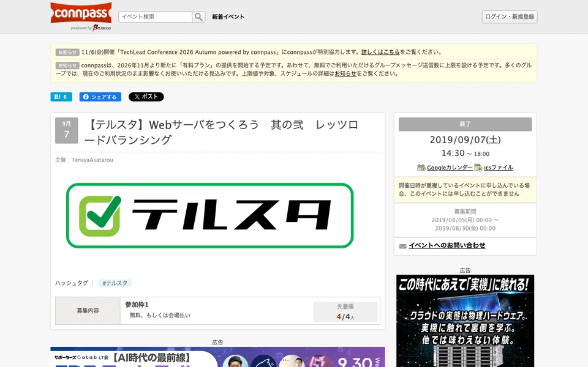
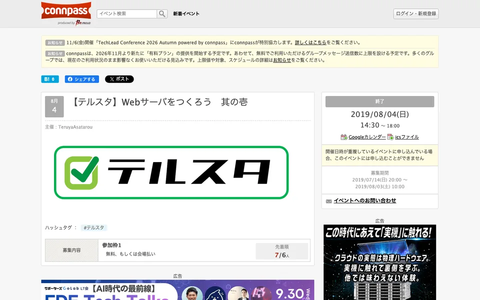

イベント

イベントアーカイブ

01connpass / #153907
イベントを見る 【テルスタ】AnsibleでNginx／MySQL／PHP／Laravel環境をざっくりつくる

02connpass / #150116
イベントを見る 【テルスタ】Webサーバをつくろう 其の参 ざっくりLAMP環境

03connpass / #142247
イベントを見る 【テルスタ】Webサーバをつくろう 其の弐 レッツロードバランシング

04connpass / #139485
イベントを見る